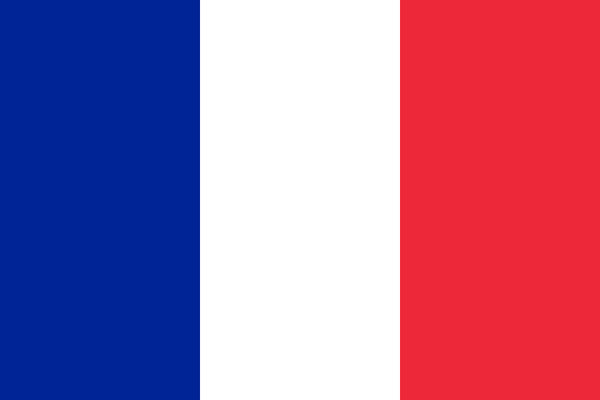

吳政陽 ChengYang Wu
自傳介紹
生於1999年1月3號，目前就讀交通大學傳播與科技學系大二，自幼對英語極感興趣，並在高中時經過英法實驗班的三年洗禮後，我成為一位更有視野及包容力的人，工作能力及抗壓性也提升許多。很快地進入到大學生活階段，首次住校離家讓我更加獨立，面對自由的大學生活，我始終秉持著不拖延的心態準備作業及考試，讓我的大學生活從容而且扎實，參加友會之後也強化了溝通能力與處理人際關係的技能。除了課業之外，不同的社團與活動團體等讓我的生活更加豐富，在活動中也累積了不少可貴的經驗。
專業技能
主要與大學所上的Adobe軟體有關，也有學過影像美學、拍片技巧、新聞產製等課程。自己有初步摸索的3D軟體、Python及網頁程式撰寫。活動期間會帶相機去拍照，練習攝影技巧。在學校一些社團或活動擔任過行銷部人員，發現對行銷有興趣，便考了GA證照。在交大網路電台擔任工程部成員了解音控軟體及機器的使用。
-
Adobe Ai
-
Adobe Ps
-
Adobe Pr
-
Maya/3ds max
-
介面/網頁設計
-
Python
-
攝影
-
行銷企劃/設計
..聯絡電話:
..0920773586
..電子信箱:
..max.wu6501@gmail.com
..求學經歷
- 臺北市松山區民族國民小學畢業
- 臺北市立介壽國民中學畢業
- 臺北市立永春高級中學英法實驗班畢業
- 就讀國立交通大學傳播與科技學系大二
..檢定認證
- GEPT全民英檢中高級通過
- TOEIC多益英語測驗905分
- TOEFL ITP托福紙筆測驗590分
- DELF A1法文檢定通過
- 「Google Analytics個人認證」通過
..語言能力
- 中文
- 英文

- 法文
..特殊經歷
- TalkBar說吧 行銷組
- 2019金Go盃歌唱大賽 行銷組
- 2018國立交通大學北區友會迎新宿營 招生長
- 交大網路電台goto&Play 工程助理
- 第一屆英法實驗班微電影展 主持人
- 國際扶輪社偏鄉線上英語課輔計畫
- 2015外交小尖兵優良團隊
- 2015臺北市高中作文比賽甲組 第三名
- 台灣法屬留尼旺交流訪問團
- YCMUN永春模擬聯合國社 教學長
- 2015臺美青年領袖高峰會
- 2014亞洲青年論壇受邀聽講
- 英文